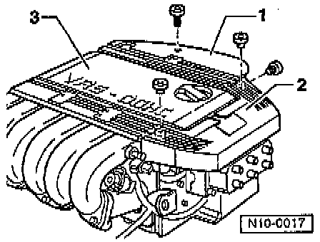
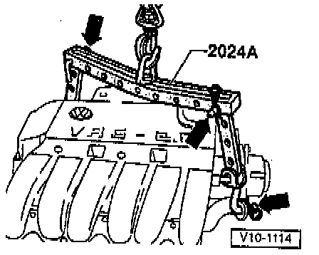
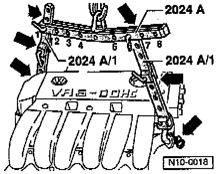
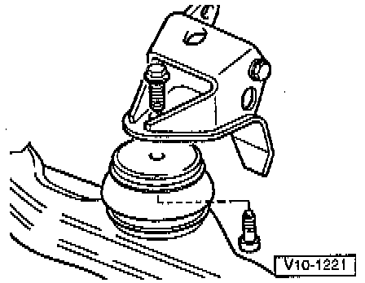

Removal
NOTE:- On vehicles equipped with an anti-theft radio, obtain the correct radio activation code before disconnecting the battery.
- The engine is removed by lifting it out toward the front, together with the transmission.
- All cable ties that are loosened or cut open when removing the engine must be put back on in the same position when the engine is installed.
PROCEDURE
1. With ignition switched OFF, disconnect battery Ground (GND) strap.
2. Remove Intake Air duct and Air Cleaner (ACL) housing.
3. Remove poly-ribbed belt.
4. Remove Spark Plug connectors with ignition cables.

5. Remove ignition cable guides -1- and -2-.
6. Remove cover -3- for upper intake manifold.
7. Disconnect Accelerator Pedal cable at throttle valve housing and support bracket (do not remove locating clip at support bracket).
8. Loosen hose clamp for power steering reservoir.
9. Disconnect power steering hydraulic line retainers from engine carrier and transmission.
10. Disconnect axle shafts and tie them up out of the way.
11. Separate front exhaust pipe from manifold.
12. Remove power steering pump without disconnecting hoses and lay to side.
13. Drain engine coolant.
14. Remove lock carrier with attachments.
15. Disconnect 42-pin connector (near Ignition Coil).
16. Disconnect all wires from transmission, alternator and starter and move clear.
17. Disconnect all coolant, vacuum and PCV breather hoses from engine.
18. Disconnect fuel supply and return lines from fuel rail and unclip from retainers on cylinder head cover.
WARNING: Fuel will be expelled. For protection against fuel spray, cover connections with a cloth.
19. Separate four pin connector to Heated Oxygen Sensor (HO2S).
20. Separate two pin connector to Knock Sensor 1 (KS1) on right rear assembly mounting.
21. Disconnect vacuum hose between upper intake manifold and Fuel Pressure Regulator.
22. Remove Intake Air Temperature (IAT) sensor from upper intake manifold.
23. On models with A/C, proceed as follows:
NOTE:
- DO NOT open the air A/C refrigerant circuit.
- Refrigerant lines bend easily.
- Opening of the A/C refrigerant circuit can only be carried out in workshops with trained technicians using the proper tools and equipment for handling the ARC refrigerant.
WARNING: DO NOT release A/C refrigerant into the atmosphere.
a. Loosen air conditioner receiver/dryer and let hang free (do not disconnect lines).
b. Remove retaining clamp(s) from A/C refrigerant pipes.
c. Remove air conditioner compressor from mounts without disconnecting A/C refrigerant lines.

d. Remove air conditioner compressor with radiator and condenser and lay to one side with lock carrier so that the A/C refrigerant hoses -arrows- are not stressed.
24. On models with manual transmission, proceed as follows:
a. Remove hydraulic clutch slave cylinder.
b. Remove transmission operating cables from transmission, with support bracket.

c. Attach engine sling tool No. 2024A, or equivalent, as follows and lift slightly with workshop crane:
- Vibration damper end: forth hole up from hook at cross bar position 1-.
- Flywheel end: fourth hole up from hook at cross bar position -8-.
NOTE:
- Use cotter pins on hooks and pins.
- The end of the cross bar marked with installation positions -1- points toward the vibration damper.
- The holes in the hooks are counted up from the hook end.
25. On models with automatic transmission, proceed as follows:
a. Disconnect selector lever cable from transmission.

b. Attach engine sling with extension as follows, and lift slightly with workshop crane:
- Vibration damper end: first hole in extension at cross bar position -1-.
- Flywheel end: third hole in extension at cross bar position -6-.
NOTE:
- Use cotter pins on hooks and pins.
- The end of the cross bar marked with installation positions -1- points toward the vibration damper.
- The holes in the hooks are counted up from the hook end.
26. On all models, disconnect transmission from left rear mount, and disconnect engine from right rear mount.

27. Disconnect engine at front mount.
28. Lift engine together with transmission out toward the front.
NOTE: Lift unit out carefully to avoid damage to body.